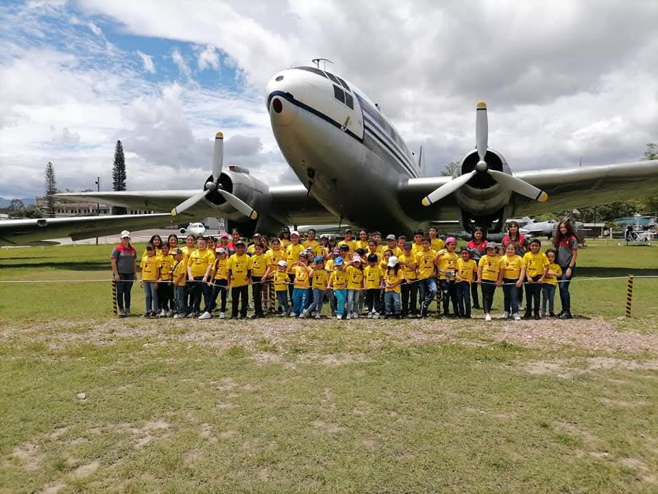
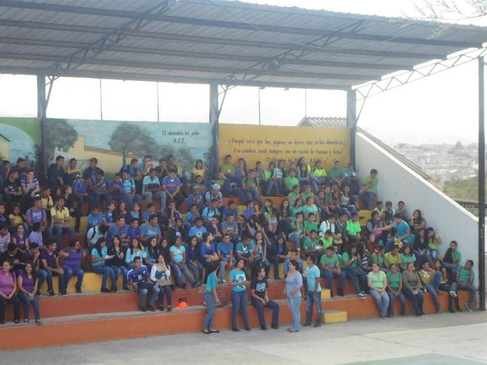
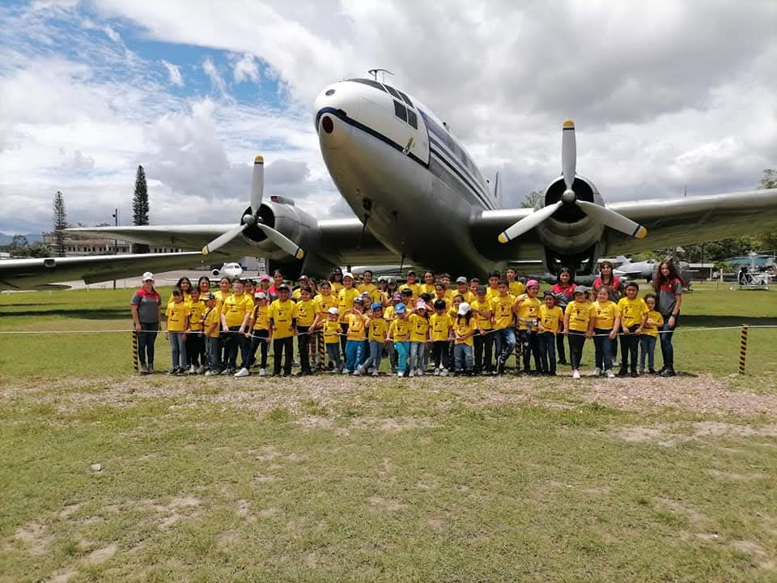
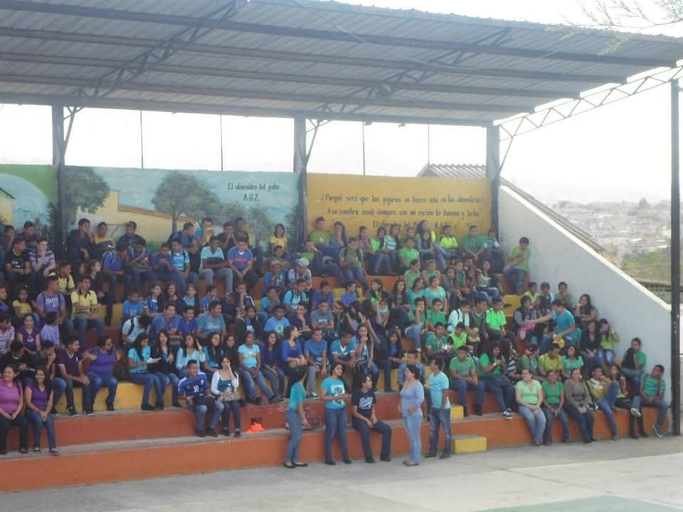

Instituto Alfonzo Guillén Zelaya

|
Académicos
Alta tasa de aprobación y egreso en nivel medio.
Generaciones de egresados han ingresado a la Universidad Nacional Autónoma de Honduras (UNAH) y a universidades privadas de prestigio.
Egresados ocupan puestos en empresas, bancos, comercios y también en instituciones públicas.
Culturales y artísticos
Banda Marcial Alfonso Guillén Zelaya:
Reconocida como una de las mejores de Centroamérica.
Ha representado a Honduras en países como Guatemala, El Salvador, Nicaragua, Costa Rica, México e Italia.
Más de 100 trofeos y medallas obtenidos en concursos.
Premios internacionales:
ü•â Tercer lugar en el International Championship Bethel 2023.
ü•à Segundo lugar en 2024 en la misma competencia.
En desfiles patrios, el AGZ ha obtenido premios por:
Mejor uniforme
Mejor cuadro artístico
Mejor banda
Mejor palillona
Sociales
Brigadas médicas y de salud mental en comunidades vecinas.
Proyectos de reforestación y limpieza comunitaria.
Campañas de sensibilización sobre violencia juvenil, educación sexual, prevención de drogas.
 



|